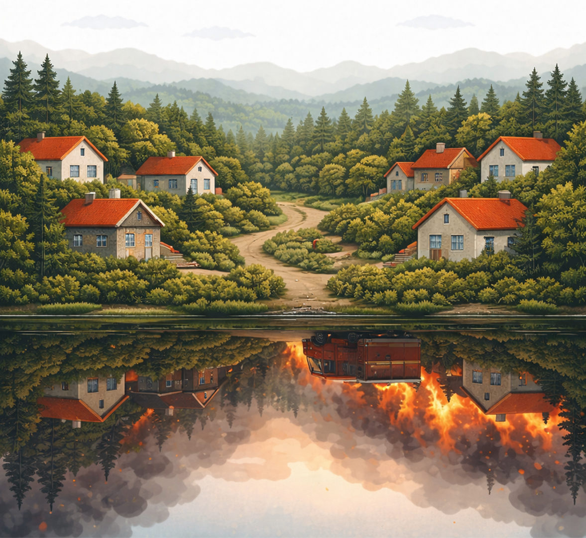
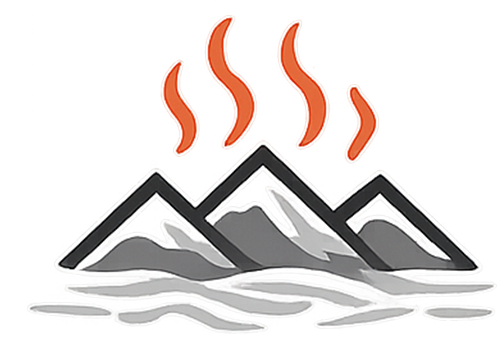

El Espejo del Fuego es una plataforma editorial que documenta experiencias locales, explica el fenómeno del fuego y traduce conocimiento técnico para fortalecer la prevención, la preparación y el aprendizaje colectivo.
Explorar historiasLa gran mayoría de los incendios forestales tiene origen humano. Pero el fuego no solo refleja condiciones climáticas o características del paisaje. También refleja la forma en que habitamos el territorio, las decisiones que tomamos, la importancia que damos a la prevención y el lugar que ocupa la preparación en nuestra vida cotidiana.
Prevenir no garantiza seguridad absoluta. Ninguna acción puede asegurar completamente que una vivienda, un entorno o una comunidad estarán fuera de peligro. Sin embargo, la preparación sí puede reducir significativamente la probabilidad de daño, mejorar la capacidad de respuesta frente a una emergencia y evitar improvisaciones en momentos críticos.
El Espejo del Fuego surge para documentar esas experiencias, conectarlas con conocimiento técnico y mostrar que el riesgo no se expresa solo en el paisaje, sino también en nuestras acciones, prioridades y formas de habitar el territorio.

Historia → Fuego y territorio → Conocimiento y datos
Cada experiencia abre preguntas. Esas preguntas se conectan con el territorio y sus dinámicas, y luego dialogan con evidencia, datos y aprendizaje aplicado para orientar decisiones de prevención.
“El fuego no solo se combate. También se anticipa, se habita y se comprende.”
En la población Las Pozas, en la ciudad de Nacimiento, Luis Mariano Navarrete mantiene una práctica sencilla: guardar agua antes de que haga falta. Lo que comenzó como una costumbre en el campo terminó convirtiéndose en una forma concreta de prepararse frente a incendios, cortes de suministro y otras emergencias.
Leer historiaRelatos, crónicas y reportajes sobre personas y comunidades que desarrollan medidas directas e indirectas.
Ver historias
Conoce el enfoque editorial, el propósito público y la forma en que se construyen los contenidos del sitio.
Conocer proyectoUn canal abierto para proponer historias, compartir experiencias y vincularse con El Espejo del Fuego.
Ir a contacto